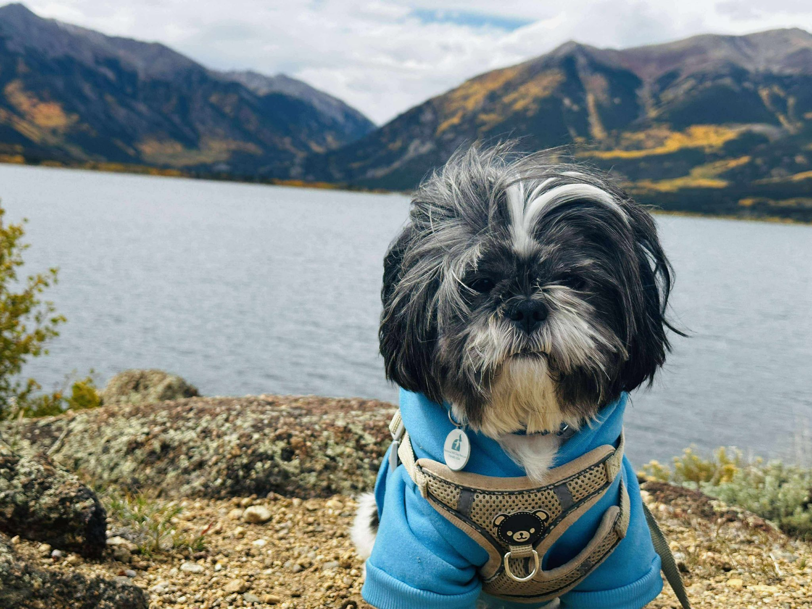

Beyond the Lab
A researcher is still a person. Mountains, books, drives, dogs, and the curious pursuit of what comes next - this is the rest of it.

Shifu is the biggest emotional anchor in my life. He loves to sniff everything, eat, and sleep - in that order. In my hardest seasons and happiest milestones, he has been there without conditions. Every mountain walk with him is a reminder of what unconditional presence actually looks like.
Named after Master Shifu from Kung Fu Panda, and living up to every bit of it.
I Used to Summit Things
Now I just hike. Still counts.
I used to do serious mountaineering - multi-day, high altitude, the full thing. Three times to Nepal: Annapurna Base Camp (ABC), Annapurna Circuit, Everest Base Camp (EBC), and Langtang Valley. In the US, I summitted El Diente in Colorado (one of Colorado's 14ers, at 14,159 ft).
I don't do multi-day treks anymore - life moved on - but I still love to hike. I've visited most of the national parks in Utah (Zion, Bryce, Arches, Canyonlands, Capitol Reef), the Grand Canyon, Horseshoe Bend, Death Valley, and the Smoky Mountains. The Rockies feel like home now.
Nepal Treks
Annapurna Base Camp, Annapurna Circuit, Everest Base Camp, Langtang Valley. All done on foot, the real way.
El Diente, Colorado
14,159 ft. One of Colorado's 14ers, in the San Juan Mountains. A summit that genuinely earned.
Utah + Southwest USA
Zion, Bryce, Arches, Grand Canyon, Horseshoe Bend, Death Valley. Most of the classic Southwest circuit.
Places I've Been
South Asia
Bangladesh
Home. Dhaka, Cox's Bazar, Sylhet, Sundarbans.
Nepal
Multiple treks - Himalayas, Kathmandu, Pokhara.
India
Manali, Meghalaya (Cherrapunji), Nagaland, West Bengal, and more.
Middle East & North America
Dubai, UAE
Loved the skyscrapers. Burj Khalifa, the scale of everything.
USA - Southwest & Rockies
Utah national parks, Colorado (summitted El Diente), Grand Canyon, Smoky Mountains, Death Valley.
Currently: West Lafayette, IN
PhD life at Purdue. Lots of corn, great research.
Fantasy is the Only
True Science Fiction
I read a lot, mostly fantasy fiction. There's something about enormous world-building and magic systems that feels structurally similar to the way good research works - rules, constraints, and then someone breaks them in an interesting way.
Tolkien - The Lord of the Rings, The Hobbit
The standard. Read multiple times.
J.K. Rowling - Harry Potter series
Grew up with it. Still re-read it.
Brandon Sanderson - Mistborn series
The magic system is genuinely one of the best in fiction. Allomancy is elegant.
Interests That
Don't Need a Lab
I like movies (no specific genre, just good storytelling), music (broad taste), long drives, board games with people I like, and staying up too late discussing AI with whoever's around. I try new things constantly - it's the same instinct that makes me switch research directions and build weird projects at 2am.